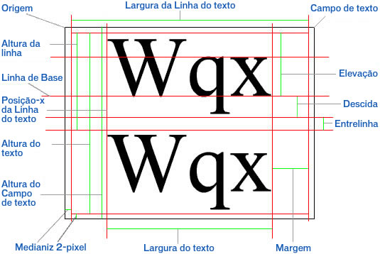

| Pacote | flash.text |
| Classe | public class TextLineMetrics |
| Herança | TextLineMetrics |
| Versão da linguagem: | ActionScript 3.0 |
| Versões de runtime: | AIR 1.0, Flash Player 9, Flash Lite 4 |
flash.text.TextField.getLineMetrics().
Para medidas relacionadas ao campo de texto que contém a linha de texto (por exemplo, a medida da "altura do Campo de texto" no diagrama), consulte flash.text.TextField.
O seguinte diagrama indica os pontos e as medidas de um campo de texto e a linha de texto que o campo contém:

Elementos da API relacionados
 Ocultar propriedades públicas herdadas
Ocultar propriedades públicas herdadas Mostrar propriedades públicas herdadas
Mostrar propriedades públicas herdadas| Propriedade | Definido por | ||
|---|---|---|---|
| ascent : Number
O valor de subida do texto é o comprimento da linha de base até o topo da altura da linha em pixels. | TextLineMetrics | ||
 | constructor : Object
Uma referência ao objeto de classe ou à função de construtor de uma determinada ocorrência de objeto. | Object | |
| descent : Number
O valor de descida do texto é o comprimento da linha de base até a parte inferior da linha em pixels. | TextLineMetrics | ||
| height : Number
O valor de altura do texto das linhas selecionadas (não necessariamente o texto completo) em pixels. | TextLineMetrics | ||
| leading : Number
O valor de entrelinha é a medida da distância vertical entre as linhas de texto. | TextLineMetrics | ||
| width : Number
O valor de largura é a largura do texto das linhas selecionadas (não necessariamente o texto completo) em pixels. | TextLineMetrics | ||
| x : Number
O valor de x é a posição esquerda do primeiro caractere em pixels. | TextLineMetrics | ||
| Método | Definido por | ||
|---|---|---|---|
TextLineMetrics(x:Number, width:Number, height:Number, ascent:Number, descent:Number, leading:Number)
Cria um objeto TextLineMetrics. | TextLineMetrics | ||
|
Indica se um objeto tem uma propriedade especificada definida. | Object | |
|
Indica se uma ocorrência da classe Object está na cadeia de protótipos do objeto especificado como o parâmetro. | Object | |
|
Indica se a propriedade especificada existe e é enumerável. | Object | |
|
Define a disponibilidade de uma propriedade dinâmica para operações de repetição. | Object | |
|
Retorna a representação da string deste objeto, formatado segundo as convenções específicas para a localidade. | Object | |
|
Retorna a representação de string do objeto especificado. | Object | |
|
Retorna o valor primitivo do objeto especificado. | Object | |
ascent | propriedade |
public var ascent:Number| Versão da linguagem: | ActionScript 3.0 |
| Versões de runtime: | AIR 1.0, Flash Player 9, Flash Lite 4 |
O valor de subida do texto é o comprimento da linha de base até o topo da altura da linha em pixels. Consulte a medida da "Subida" no diagrama da visão geral da classe.
Elementos da API relacionados
descent | propriedade |
public var descent:Number| Versão da linguagem: | ActionScript 3.0 |
| Versões de runtime: | AIR 1.0, Flash Player 9, Flash Lite 4 |
O valor de descida do texto é o comprimento da linha de base até a parte inferior da linha em pixels. Consulte a medida da "Descida" no diagrama da visão geral da classe.
Elementos da API relacionados
height | propriedade |
public var height:Number| Versão da linguagem: | ActionScript 3.0 |
| Versões de runtime: | AIR 1.0, Flash Player 9, Flash Lite 4 |
O valor de altura do texto das linhas selecionadas (não necessariamente o texto completo) em pixels. A altura da linha de texto não inclui a altura da medianiz. Consulte a medida da "Altura da linha" no diagrama da visão geral da classe.
Elementos da API relacionados
leading | propriedade |
public var leading:Number| Versão da linguagem: | ActionScript 3.0 |
| Versões de runtime: | AIR 1.0, Flash Player 9, Flash Lite 4 |
O valor de entrelinha é a medida da distância vertical entre as linhas de texto. Consulte a medida da "Entrelinha" no diagrama da visão geral da classe.
Elementos da API relacionados
width | propriedade |
public var width:Number| Versão da linguagem: | ActionScript 3.0 |
| Versões de runtime: | AIR 1.0, Flash Player 9, Flash Lite 4 |
O valor de largura é a largura do texto das linhas selecionadas (não necessariamente o texto completo) em pixels. A largura da linha de texto não é idêntica à largura do campo de texto. A largura da linha de texto é relativa à largura do campo de texto menos a largura da medianiz de 4 pixels (2 pixels em cada lado). Consulte a medida da "Largura da linha do texto" no diagrama da visão geral da classe.
Elementos da API relacionados
x | propriedade |
public var x:Number| Versão da linguagem: | ActionScript 3.0 |
| Versões de runtime: | AIR 1.0, Flash Player 9, Flash Lite 4 |
O valor de x é a posição esquerda do primeiro caractere em pixels. Esse valor inclui as larguras da margem, do recuo (se houver) e da medianiz. Consulte "Posição-x da linha do texto" no diagrama da visão geral da classe.
Elementos da API relacionados
TextLineMetrics | () | Construtor |
public function TextLineMetrics(x:Number, width:Number, height:Number, ascent:Number, descent:Number, leading:Number)| Versão da linguagem: | ActionScript 3.0 |
| Versões de runtime: | AIR 1.0, Flash Player 9, Flash Lite 4 |
Cria um objeto TextLineMetrics. O objeto TextLineMetrics contém informações sobre a métrica de texto de uma linha de texto dentro de um campo de texto. Os objetos dessa classe são retornados pelo método flash.text.TextField.getLineMetrics().
Consulte o diagrama na visão geral da classe para conferir as propriedades no contexto.
Parâmetrosx:Number — A posição esquerda do primeiro caractere, em pixels.
| |
width:Number — A largura do texto das linhas selecionadas (não necessariamente o texto completo) em pixels.
| |
height:Number — A altura do texto das linhas selecionadas (não necessariamente o texto completo) em pixels.
| |
ascent:Number — O comprimento da linha de base até o início da altura da linha em pixels.
| |
descent:Number — O comprimento da linha de base até a parte inferior da linha em pixels.
| |
leading:Number — A medida da distância vertical entre as linhas de texto.
|
Elementos da API relacionados
- Crie uma propriedade chamada
labeldo tipo TextField. - O construtor chama
configureAssets(), que faz o seguinte:- Define o alinhamento do palco como superior-esquerdo e sem escala.
- Cria um novo objeto TextField denominado
label. - Ativa o plano de fundo de
labele define a cor como branco. - Permite que o texto de
labelseja espalhado em várias linhas com quebra automática de texto. - Atribui o resultado de uma chamada a
getLabelText()para a propriedadetextdelabel. O métodogetLabelText()cria uma variável do tipo XML e a atribui a um nó XML denominadobody, preenchido com uma frase longa. - Adiciona
labelà lista de exibição utilizandoaddChild().
- Um método chamado
resizeHandler()que é ouvinte de eventosresizerealizados no palco é então adicionado. Sempre que o tamanho da janela do Flash Player for alterado, um eventoRESIZEserá despachado e acontecerá o seguinte:draw()é chamado para garantir quelabelseja exibido no centro do palco e esteja cercado por um buffer de 10 pixels.- Em seguida,
setTimeout()executashowMetrics()após um breve atraso. O atraso será adicionado porque a métrica de linha não foi atualizada depois que o eventoRESIZEfoi concluído e o palco foi totalmente redesenhado. showMetrics()atribui uma variável TextLineMetrics denominadametricsao resultado de uma chamada paragetLineMetrics()e essa variável é passada a uma nova ocorrência de uma ocorrência LineMetricsReader denominadareader. Em seguida, as duas variáveis são utilizadas nas chamadas paratrace()para imprimir a primeira (e única) linha delabele as informações fornecidas pela ocorrência LineMetricsReader através do seu métodotoString().
- O construtor força um despacho único do evento
resizepara forçar quelabelseja desenhado corretamente quando o arquivo SWF for carregado pela primeira vez.
package {
import flash.display.Sprite;
import flash.display.StageAlign;
import flash.display.StageScaleMode;
import flash.events.*;
import flash.text.TextField;
import flash.text.TextLineMetrics;
import flash.utils.setTimeout;
public class TextLineMetricsExample extends Sprite {
private var gutter:int = 10;
private var label:TextField;
public function TextLineMetricsExample() {
configureAssets();
configureListeners();
resizeHandler(new Event(Event.RESIZE));
}
private function showMetrics():void {
var metrics:TextLineMetrics = label.getLineMetrics(0);
var reader:LineMetricsReader = new LineMetricsReader(metrics);
trace("lineText: " + label.getLineText(0));
trace("metrics: " + reader);
}
private function configureAssets():void {
stage.align = StageAlign.TOP_LEFT;
stage.scaleMode = StageScaleMode.NO_SCALE;
label = new TextField();
label.background = true;
label.backgroundColor = 0xFFFFFF;
label.multiline = true;
label.wordWrap = true;
label.text = getLabelText();
addChild(label);
}
private function configureListeners():void {
stage.addEventListener(Event.RESIZE, resizeHandler);
}
private function resizeHandler(event:Event):void {
draw();
setTimeout(showMetrics, 100);
}
private function draw():void {
label.x = gutter;
label.y = gutter;
label.width = stage.stageWidth - (gutter * 2);
label.height = stage.stageHeight - (gutter * 2);
}
private function getLabelText():String {
var text:XML = <body>The Flex product line enables developers to build rich Internet applications that blend the responsiveness of desktop software, the cross-platform reach of the web, and the expressiveness of the Flash Platform.</body>
return text.toString();
}
}
}
import flash.text.TextLineMetrics;
class LineMetricsReader {
private var metrics:TextLineMetrics;
public function LineMetricsReader(metrics:TextLineMetrics) {
this.metrics = metrics;
}
public function toString():String {
return "[TextLineMetrics ascent:" + metrics.ascent
+ ", descent:" + metrics.descent
+ ", leading:" + metrics.leading
+ ", width:" + metrics.width
+ ", height:" + metrics.height
+ ", x:" + metrics.x
+ "]";
}
}
Wed Jun 13 2018, 11:10 AM Z